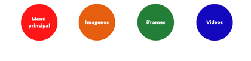

Los mapas de imágenes es un nuevo planteamiento de navegación que incorpora una serie de enlaces dentro de una misma imagen. Estos enlaces son definidos por figuras geométricas y funcionan exactamente del mismo modo que los otros enlaces. Podéis ver el funcionamiento de uno en este enlace.
|

Pulsa en los círculos para acceder a las paginas correspondientes. |